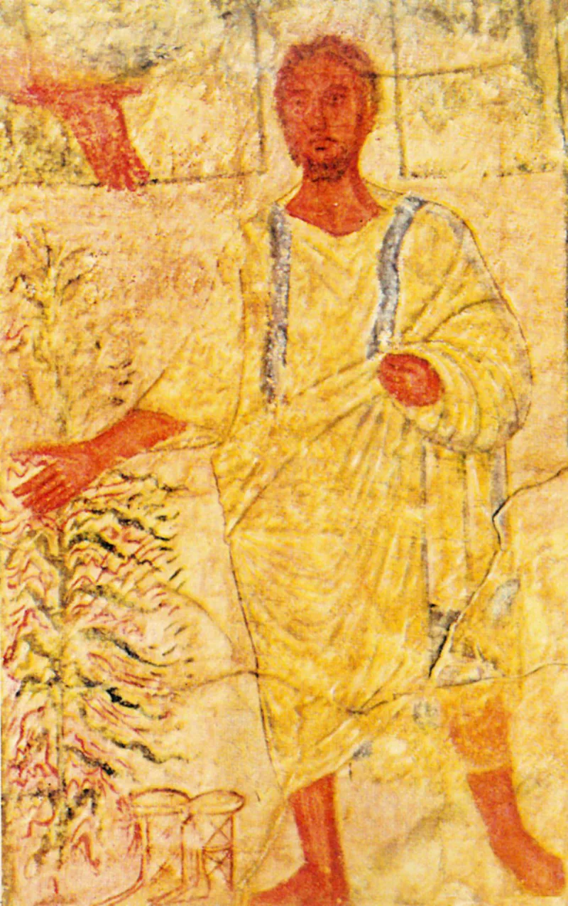

They invented a Greek tense to fix John 8:58
ContestedWitness defenders have a real answer here. Say so before your friend does.
What the verse says
Every major Bible has Jesus say "before Abraham was, I am." The Greek is ego eimi. Their Bible reads "I have been." The echo of God's own name fades.
So does the reason the crowd picks up stones in the next verse.
The footnote they had to withdraw
The 1950 edition explained ego eimi as the "perfect indefinite tense." No such tense exists in Greek. Later editions changed the note to "perfect tense." Then it was dropped for a different argument.
The first explanation was simply invented.
Their real answer, at full strength
The serious defense is an idiom called the Present of Past Action. A Greek present verb plus a past time phrase can be turned into an English perfect.
K. L.
McKay is a recognized Greek grammarian with no Watchtower ties. He wrote in Expository Times in 1996 that "I have been in existence since before Abraham was born" is acceptable.
On that reading Jesus claims to have existed before Abraham, which is still a large claim. The Greek Old Testament also has God say ho on, "the Being," at Exodus 3:14, not bare ego eimi.
Where that runs out
Look at John 8:24 and John 8:28. There the same words stand with nothing after them, even in their Bible.
And a grammar point does not make a crowd reach for stones. The reaction tells you what they heard.
How strong is this argument?
Genuinely arguable, both ways. Their first explanation was made up, and they had to retract it.
But the idiom defense is real. Argue from the crowd and from John 8:24, not from tense charts.
What to say
"Read John 8:59 with me. Why did they pick up stones over a sentence about how long he had existed?"


How they answer this — at its strongest
Greek scholar K. L. McKay, with no Watchtower ties, says 'I have been' is fair.
The serious defense is not the abandoned 'perfect indefinite tense.' It is the idiom called the Present of Past Action. A Greek present verb with an expression of past time can fairly become an English perfect. K. L. McKay is a recognized Greek grammarian with no Watchtower ties. He wrote in Expository Times in 1996 that 'I have been in existence since before Abraham was born' is an acceptable rendering of the idiom.
On that reading Jesus claims pre-existence. That is itself a remarkable claim. He is not pronouncing the divine name. The Greek Old Testament also has God say ho on, 'the Being,' at Exodus 3:14. It does not have a bare ego eimi there. That weakens the direct echo.
The verdict
A fair fight: their first note was made up, but the idiom defense is real.
Two things are true at once. The Watchtower's first grammatical justification was invented. It had to be retracted through a run of footnote rewrites. That is a documented embarrassment. And yet the idiom rendering has genuine scholarly support in McKay. So 'I have been' cannot be called flatly impossible.
The context cuts against the NWT. At John 8:24 the words stand alone: 'unless you believe that I am, you will die in your sins.' And the crowd reaches for stones. Both fit a divine claim rather than a grammar lesson.
Grade this one contested. In conversation, argue from the audience's reaction and from 8:24. Do not argue from tense charts.
Sources
- Department of Christian Defense — the NWT and John 8:58
- EarlyChurch.net — Ego Eimi in John 8:58
- NWT Defended — ego eimi and John 8:58 (JW-side)
- Elihu Books — NWT footnotes to John 8:58 (history of the footnote changes)